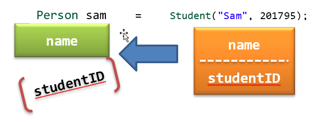

The Slicing Problem
Here's why this happens. First, objects in C++ are value types, unlike the reference types in Java. When you assign a derived class object to a base class variable, only the base class portion of the object is copied. This is called the slicing problem.

If you pass a derived class object by value to a function that expects a base class object, the same slicing will occur as well. This is easy to fix. Just always follow this rule:
Never ever ever ever assign a derived class object to a base class variable. Ever!
 This course content is offered under a
CC
Attribution Non-Commercial license. Content in this course
can be considered under this license unless otherwise noted.
This course content is offered under a
CC
Attribution Non-Commercial license. Content in this course
can be considered under this license unless otherwise noted.